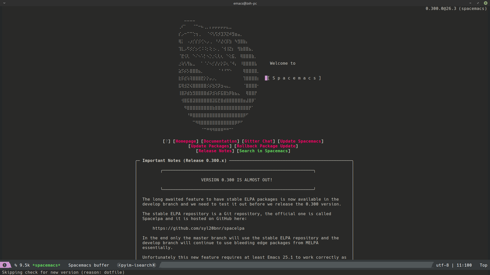
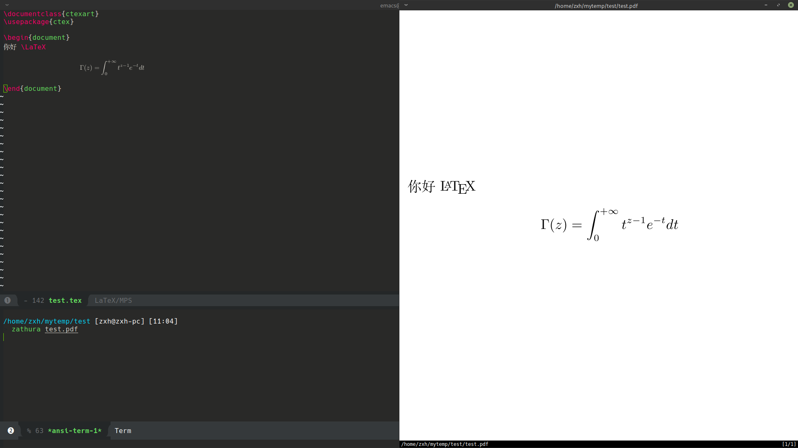
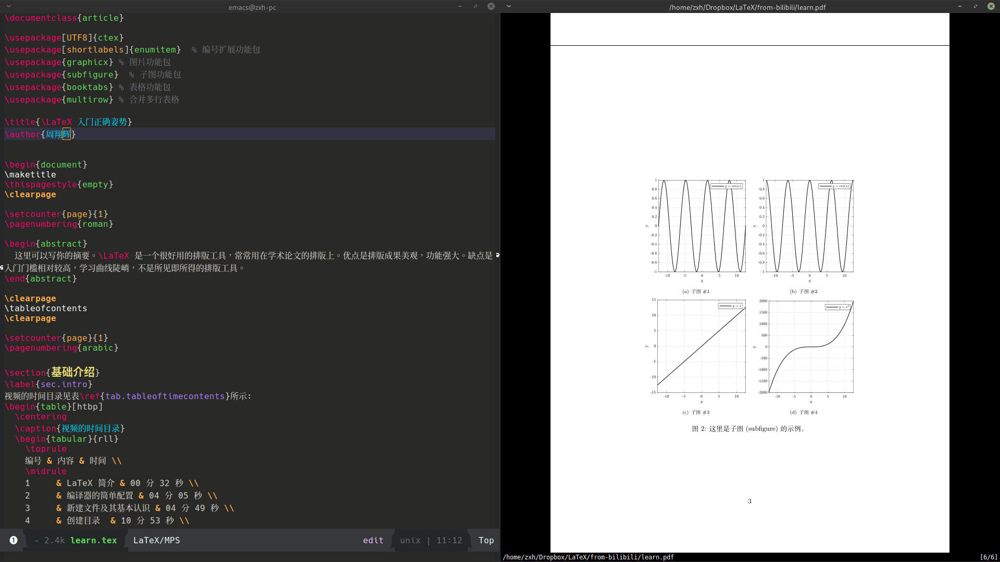

在 Manjaro 上安装 LaTeX
Posted
Contents
前言
LaTeX（/ˈlɑːtɛx/，常被读作/ˈlɑːtɛk/或/ˈleɪtɛk/，写作“LaTeX”），是一种基于TeX的排版系统，由美国计算机科学家莱斯利·兰伯特在20世纪80年代初期开发，利用这种格式系统的处理，即使用户没有排版和程序设计的知识也可以充分发挥由TeX所提供的强大功能，不必一一亲自去设计或校对，能在几天，甚至几小时内生成很多具有书籍质量的印刷品。对于生成复杂表格和数学公式，这一点表现得尤为突出。因此它非常适用于生成高印刷质量的科技和数学、物理文档。这个系统同样适用于生成从简单的信件到完整书籍的所有其他种类的文档。

安装记录
下载 texlive.iso
这里选择的是重庆大学的镜像站点 texlive.iso
当然也可以选择清华大学的景象站点 texlive.iso
安装 texlive
- 挂载 texlive.iso
$ sudo mount texlive.iso /mnt
$ cd /mnt
- 使用
texlive提供的install-tl脚步安装，一路默认
$ sudo ./install-tl
- 配置
texlive环境变量
$ echo `export PATH=$PATH:/usr/local/texlive/2019/bin/x86_64-linux` >> .xprofile
- 测试安装的 texlive，使用
xelatex编译一下test.tex
%% test.tex
\documentclass{article}
\usepackage{ctex}
\begin{document}
你好 \LaTeX
\end{document}
$ xelatex test.tex
# 编译过程
$ ls
$ test.aux test.log test.pdf test.tex x.lo
$ zathura test.pdf # 查看编译成功的 test.pdf
- 编译后的效果图
配置 spacemacs
-
首先当然是安装 emacs啦
sudo pacman -S emacs -
安装 spacamacs，这里使用的是
develop分支$ git clone https://github.com/syl20bnr/spacemacs ~/.emacs.d $ cd ~/.emacs.d $ git checkout develop # 切换到 develop 分支 -
打开
emacs安装spacemacs，这里可能会遇到网络过慢的问题，解决办法就是，先把emacs关闭，然后在~/.spacemacs中加入清华的 elpa源：;; 在 (defun dotspacemacs/user-init () 中加入 (setq configuration-layer-elpa-archives '(("melpa-cn" . "http://mirrors.tuna.tsinghua.edu.cn/elpa/melpa/") ("org-cn" . "http://mirrors.tuna.tsinghua.edu.cn/elpa/org/") ("gnu-cn" . "http://mirrors.tuna.tsinghua.edu.cn/elpa/gnu/"))) -
配置 latex layer, 打开 emacs, 按下
space f e d，编辑配置文件;; 在dotspacemacs-configuration-layers中加入 (latex :variables latex-build-command "XeLaTeX")然后退出
emacs，并重新打开, 按下space f e d，编辑配置文件;; 在(defun dotspacemacs/user-config () 中加入 (add-hook 'LaTeX-mode-hook #'(lambda () (add-to-list 'TeX-command-list '("XeLaTeX" "%`xelatex --synctex=1%(mode)%' %t" TeX-run-TeX nil t)))) (setq org-latex-pdf-process '("xelatex -interaction nonstopmode %f" "xelatex -interaction nonstopmode %f")) -
配置完成，重新打开后测试

- 编辑一个
tex文件，按space m p d进行在emacs内的预览，按space m b进行编译输出pdf文件


- 编辑一个